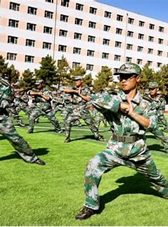
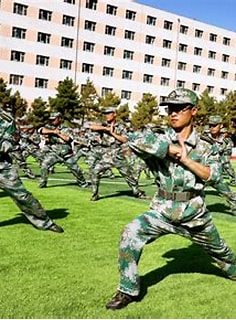
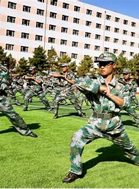
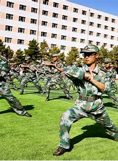
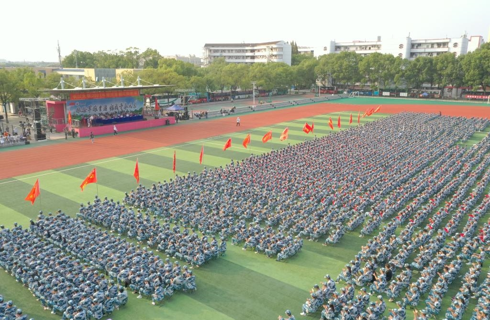

.jpeg "军体拳") 



晚上我们和二排的兄弟一起唱了<<当那一天真的来临>>其中高音部分我是真的唱不上去，结果摸鱼了一晚上。真的累~
晚上还是规定的军歌时间，我发现自己唱的真不咋地，于是只好摸鱼了。&_&......不过隔壁连唱的是真的好*_*佩服...
军训第一阶段就要结束了，上午进行成绩考核。略微有点紧张，希望明天能发挥好吧。现在回想好像军训也没太多任务......
今天进行分列式的选拔，很遗憾我落选了。于是就来到了军体拳刚开始还有点难过，但是练了一会后，我发现还是挺有意思的。或许在这边真的更适合我呢。
今天下午我们举办了趣味运动会，三个项目。
我们连接力第二名，八人九足第一名，拔河也是第一。今天连长难得高兴一会，教官们一起唱歌。脱下了平时严肃的外表，教官们竟是如此可爱。
返回目录今天正式开始演练。